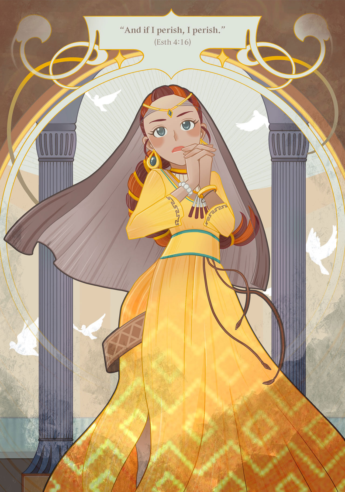
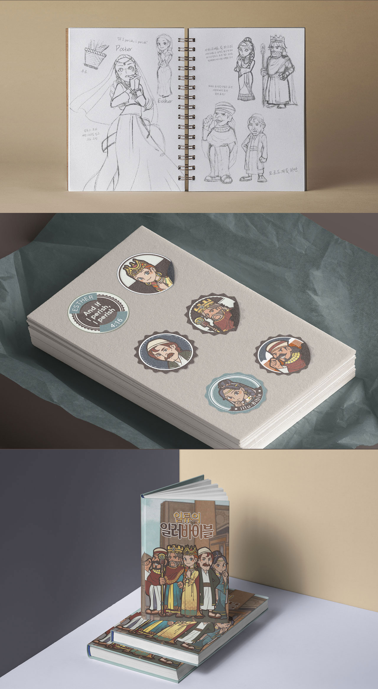
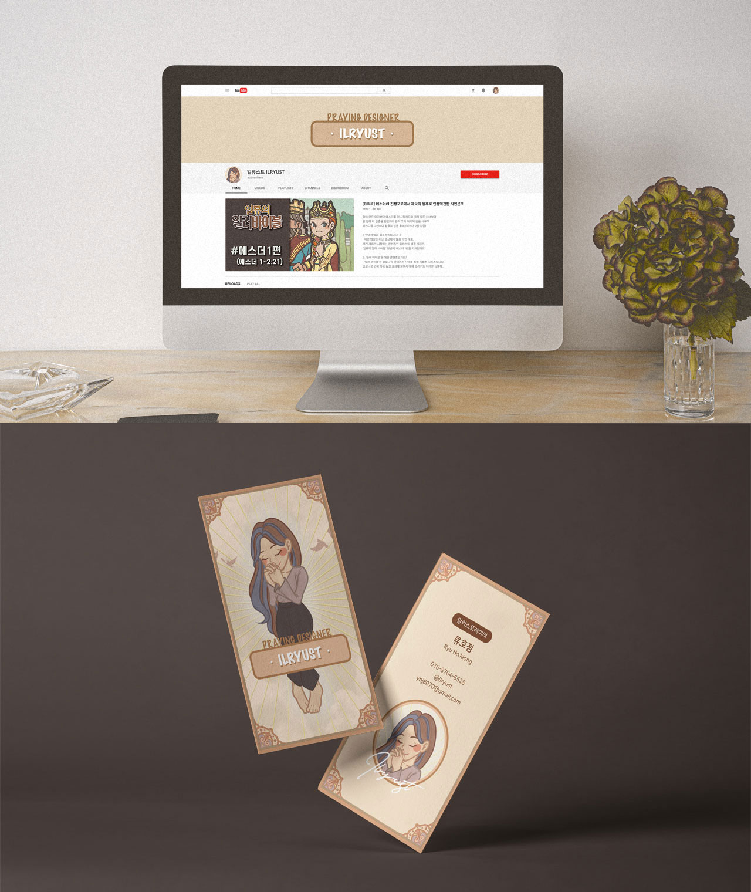
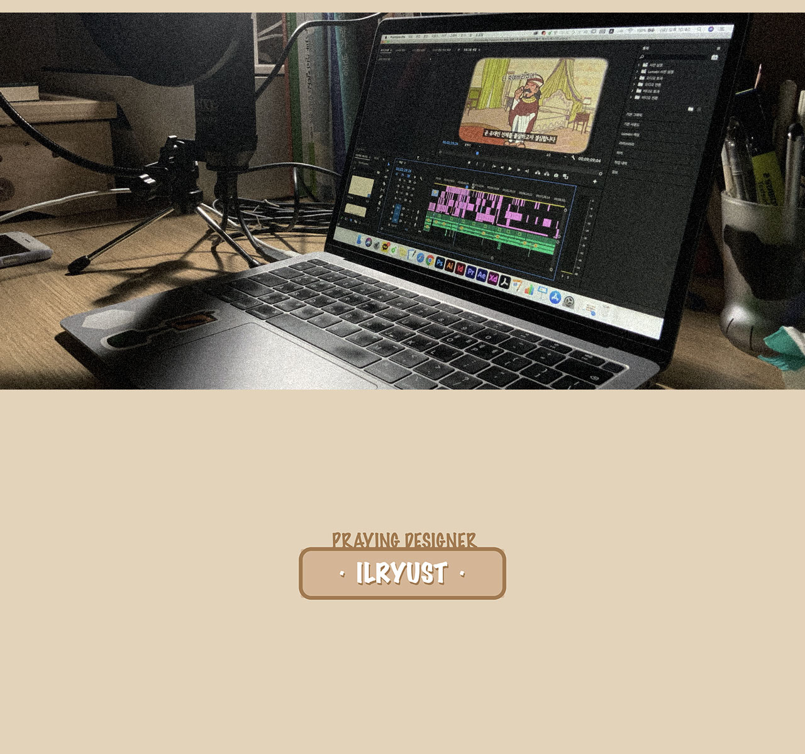
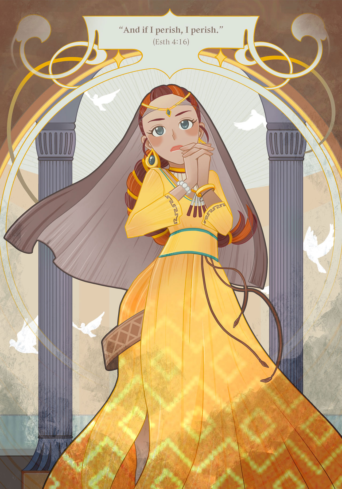
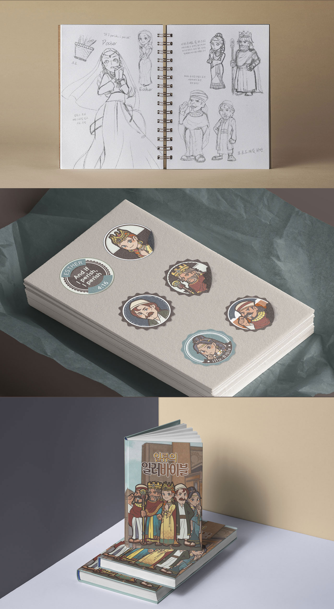
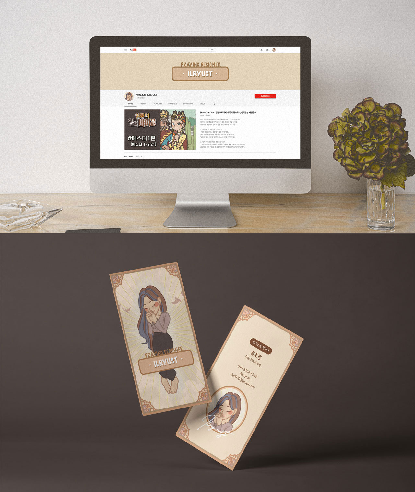
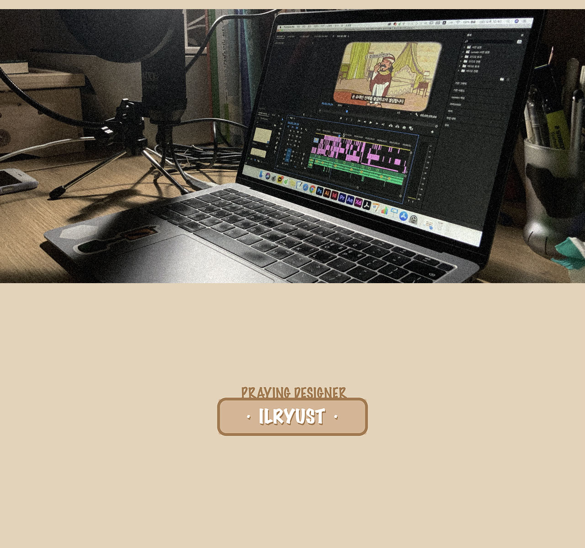

일류의 일러 바이블
류호정
https://www.instagram.com/ilryust_hj/
https://bit.ly/33H4LGF
팬데믹 사태를 맞이하여 우리가 예상치 못했던 다양한 삶의 범주가 온라인 방식으로 전환되고 있는 가운데, 종교 역시 예외는 아니다. 예배마저 온라인으로 드려야 하는 상황에, 삶 속에서 성경을 묵상하는 것이 익숙하지 않은 기독교인들이 존재한다. 또한, 성경의 내용이 궁금하지만 글씨가 빼곡한 성경책을 펼치기만 하면 잠이 쏟아진다는 사람들도 있다. 이번 작품은 크리스천이자 디자이너로서 포스트 코로나 시대에 내가 던지는 하나의 대안이다. 유튜브 플랫폼을 통해 나만의 아트웍을 살린, 어른을 위한 일러스트 성경을 소개한다.
In the face of the pandemic, various categories of life that we did not expect are turning to online methods, and religion is no exception. There are Christians who are not accustomed to meditating on the Bible in their lives in a situation where they have to even worship online. In addition, there are people who are curious about the contents of the Bible, but they're saying if we open a Bible book, we'll feel bored. As a Christian and designer, I submit this work as an alternative to the post-corona era. Introducing Illustrated Bibles using my own artwork through the YouTube platform.